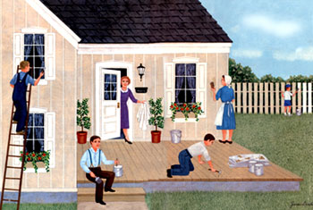
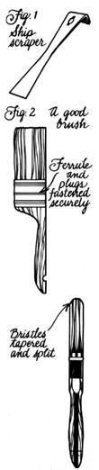
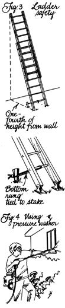
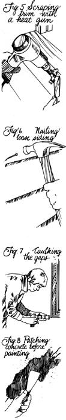
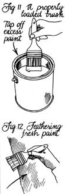

Mother's Handbook
Making sense of the homeowner's most misunderstood cover-up
Take this simple test: When it comes to home maintenance, do you wish to devote little time to a project but want maximum results? Do you keep your eyes peeled for wonder products that save time, money and effort? Would you like to fly through a job to be done with it once and for all?
If your answers to those questions are yes, you'd better look for a professional contractor when the time comes to paint your house, because you'll probably be the most disappointed do-it-yourselfer on the face of this earth if you tackle the job on your own.
Why? Because, as easy as painting appears, the job is actually more involved than many other skills that look considerably more complicated. And because the answers to problems aren't always obvious, a lot of time can be just flat wasted doing work that may only last in terms of months, not the hoped-for years.
The Decision
Believe it or not, a good many people don't really know when their house needs a paint job. Only a procrastinator could overlook a badly weather-beaten finish-in which there's more wood showing than paint-but there are a number of other clearly visible signs that point out when it's time to shed the old coat for a new one.
Unfortunately, age is only one source of sorrow for a painted surface. Moisture, poor preparation, faulty paint ing techniques and just plain bad paint can reduce the life of a finish drastically-sometimes to as little as one season. If the problem is not corrected before the re paint ing's done, it will invariably show up again to ruin the job a second time around. Here, then, are some symp toms to look out for when evaluating your home as a can didate for a repaint job:
Peeling. Paint that's peeled away or blistered has either been used without a primer, slapped over a glossy or chalky finish, applied to a wet surface, or pushed off the surface by water that's found its way in from beneath the coat. The water problems are exasperating in that it can be difficult to determine exactly where the moisture came from. Rain-damp or uncured lumber will dry eventually, but an overly humid house, an improper vapor barrier or poor ventilation can be sources of difficulty that might call for diagnosis by a professional.
Cracking. This condition develops with time into scaling and is generally caused by the use of brittle or nonelastic paint or by painting without a primer. The coat cracks when the wood expands and contracts, allowing moisture to get behind the coating and lift it off:
Checking. The surface of the paint is marred by a network of fine, crisscrossed lines; in worse cases, the lines are coarse and deep. Checking results from the application of a second coat before the first has dried, or from the use of a paint incompatible with a previous finish.
Wrinkling. It looks just like it sounds, and can be traced to paint that was too thick when applied. The paint's exposed surface dried before the gel underneath, causing the top skin to pucker with complete drying.
Sagging. Runs and sags in the surface point to an overheavy application of paint, most likely due to a poor loading or brushing technique.
Tackiness. Paint that never seems to dry may have been applied improperly (in wet weather or over an undried coat), but a quality paint should eventually dry under most conditions. Poorly made paint, on the other hand, may lack the right solvent, drier or oils to harden into a suitable finish.
Chalking. When lighter-colored paints leave a heavy residue that comes off in your hand or visibly onto other surfaces, they're chalking excessively. However, some exterior paints are specifically designed to chalk to some degree so rain will wash away accumulated dirt.
Bleeding. Knots and sap streaks in lumber contain resin that can soak into the paint and bleed right through to the finish coat if they were never sealed properly.
Staining. Rust marks from nails, staples and other trim and siding fasteners leave small stains at or around the point of entrance, most of which need only touching up.
Sp otting. The appearance of uneven, or flat, spots in the finish coat indicates the inconsistent use of primers or the lack of any primer at all.
That's the bad news. The good news is that all of these conditions can be corrected-many of them with just time and elbow grease. If you're still considering facing the job yourself, read on; it may not be as difficult as you thought.
The Right Stuff
One positive aspect of do-it-yourself painting is that it doesn't take a bank loan to get set up. Chances are you already have-or can easily borrow-much of the equipment you'll need, and what you don't have you can buy, rent or possibly even get along without.
Scrapers. There are easily a half-dozen different types, including the standard hook blade for wood, the razor blade for window glass, a broad-bladed model for flat surfaces and the putty knife for general work. But one of the best all-around paint shuckers is a variant on a beekeeper's hive tool sold as a small pry bar and sometimes called-erroneously-a ship scraper (Fig. 1). The curved end is great for corners or hard-to-reach places and for flat trim too; the straight blade can handle stubborn spots and odd prying jobs. Believe it or not, there's even a power scraper on the market that uses a reciprocating blade to do most of the work for you.
Sanding equipment also falls into this category, and includes not just a sanding block and coarse, medium and fine-grade paper, but a wire brush and some Grade 3 (coarse) steel wool for special jobs. If you have a small electric sander, all the better.
Finally, to ease the chore of scraping, electric paint softeners can also be used. Far less dangerous than a blowtorch, the older types work like clothes irons and may have built-in scrapers. More-modern heat guns blast a jet of near-1,000°F air to disintegrate the bond between the paint and the wood; one model also has a blade built into the nozzle.
Power washers. When first introduced, pressure washers were greeted with skepticism because it was believed that they forced water into the wood. Nonetheless, they've gained widespread acceptance, probably because they easily halve preparation time. The best machines have a normal (for bleaching or washing) and a high-pressure (for rinsing and stripping) mode, deliver a maximum of 1,500 to 2,500 psi of water at up to four gallons per minute and offer a selection of nozzle spray patterns. Rental costs range from $45 to $75 per day.
Of course, an old-fashioned scrub brush and pail backed up with a garden hose work almost as well if you have the time, especially if the painted surface is merely dirty or chalky.
Brushes and rollers. There's no substitute for a top-of-the-line paintbrush. A quality brush will hold paint better, spatter less and produce a smoother finish than will an inexpensive one. For exterior work, a four-inch wall brush, a one-and-one-half-inch trim brush and a oneinch beveled sash brush should cover all the bases, though it never hurts to have two main brushes so you can switch off: As a rule, natural-bristle brushes should be reserved for alkyd (oil-based) paints since they're resistant to solvents. Too, the water in latex paints deforms their China boar hairs. Synthetic brushes-notably polyester and nylon-are fine for both alkyd- and latex-based products and are easy to clean.
Look for a brush with a full measure of tapered bristles, at least half of which should be flagged, or split, at the ends (Fig. 2). The metal ferrule would ideally be stainless steel, and the bristle setting and plugs inside be solidly fastened. Check the brush against a flat surface for elasticity and excessive fanning-out, and see that the bristles vary in length.
Rollers are usually saved for interior work. Two common exceptions are the use of along-nap (three-fourths-to one-and-one-fourth-inch pile) roller for stucco, brick, masonry or wire fencing, and the three-inch-diameter foam corner roller for grooves and edges.
You should also be aware that there are other painting utensils available. Foam pad applicators seem to work well with both latex paint and stain, on concrete block, shingles and siding. Disposable foam trim brushes eliminate cleanup. And, for those with major jobs to contend with, power paintbrushes and rollers can save paint and time if 1) you're dealing in only one or two colors and 2) you're willing to devote added time to cleanup and maintenance.
Ladders. An extension ladder is most useful, and obviously should be long enough to reach the highest part of your house when extended to its safe limit. A six-foot stepladder also may come in handy for working on trim and window frames.
Accessories. It's easy to forget the odds and ends until they become conspicuous by their absence. For starters, you'll need a small supply of glazing compound or paintable silicone, a caulking gun, a five-gallon bucket with lid, a couple of paint pots with handles and pail hooks, perhaps a roller tray, wipe rags, masking tape, a metal paint shield, at least one drop cloth, safety glasses, a screwdriver, a hammer and a nail set and, by all means, clothing and a cap you care nothing about.
In Preparation
Even those who don't know beans about painting are probably aware that the preparation work is more difficult and time-consuming than the application itself. The simple truth is that even the best paint money can buy won't adhere to a surface that's not willing to accept it.
Grab a putty knife and make a circuit around the outside walls of your house. You're looking for the symptoms mentioned earlier, and the blade will help you locate patches of blistering and cracking if they're not already evident. Keep an eye out at the same time for loose siding, exposed nailheads, gaps, cracks or missing caulk, and things like stains, mildew and glossy spots.
Then set up your extension ladder beneath the roof peaks and examine the gables. The base of the ladder should be about one-fourth its total height from the wall, and the treads should be firmly footed. If the ground is slippery, you can tie the bottom rung to a stake pounded into the earth (Fig. 3). Make sure the rung clamps are locked in place before you go up, and don't climb beyond the last four feet or lean sideways-reaching overhead or a comfortable distance to the side is better.
The paint on your house may be faded, dirty or chalky, but essentially sound. If this is the case, consider yourself lucky because you may only have to wipe it free of residue. Most likely, though, you'll need to scrub the surface with a solution of one-third cup of biodegradable detergent or mild household soap to one gallon of water, and rinse it clean.
Mildew spots will require a stronger solution. For a four-gallon mix, one gallon of chlorine bleach and a cup of trisodium phosphate (TSP) in three gallons of water should do the trick. When faced with large areas of mildew and a dirty surface, it may be best to simply use a pressure washer and be done with it (Fig. 4). One warning: Read the operating instructions carefully, and ask the rental dealer about anything you're not sure of. And always wear safety goggles to protect your eyes against flying debris.
What if you've got a case of flaking or blistering paint? If it's just the gutters or trim, have a go at it with a wire brush and a scraper. Stubborn sections may require a chemical paint remover or some help with a heat gun to get the bad paint of (Fig. 5). Siding is a bit tougher because it covers a greater area. The scrape-and-brush routine is OK if you've got time, but high pressure from a good power washer will generally remove about three-quarters of the loose paint, leaving you with some hand work and some spots that are sound. The dangers of the pressure treatment are that water can get into the wall through gaps and that the blast can actually peck holes in soft wood. These risks can largely be avoided by keeping the spray away from open joints and aiming the nozzle at an angle to the wall to lessen impact.
Paint that is checked, badly wrinkled or permanently tacky should be removed completely so you can start with a clean slate. If the problem is light wrinkling, sagging or spotting, a good sanding with coarse and medium paper may level the finish out enough to give you a decent base to build upon.
Bleed marks from resin or chemical extractives in the wood will have to be sanded right down to the surface, then sealed with shellac thinned with 25% denatured alcohol, or one of the commercial stainkilling sealers, and allowed to dry before priming.
A glossy or slick surface creates problems of its own in that new paint won't stick to it. Rough up these areas with coarse paper, then smooth them with a finer grade. There's also a deglosser available that does this chemically, but it's volatile, messy and best left to a professional.
What about nail stains on painted surfaces? If you can, remove loose, rusty nails and replace them with aluminum or nonrusting fasteners (Fig. 6); if not, just sand the heads clean and countersink them 1/8 inch. After sanding the surrounding wood (or removing the stains with oxalic acid), prime the nailhead and fill the hole with glazing compound before painting.
Sorry to mention it, but there couldn't be a better time to scout the siding and trim for gaps, cracks and holes, as well as loose putty and caulk. You can get an exterminator to assess any apparent insect damage, but it's up to you to reputty window sashes, remove and repack loose caulk around joints (paintable silicone is an option) and caulk any gaps that may need filling (Fig. 7). Now's the time, too, to tighten gutters and downspouts, fix loose flashing and dress structural iron or steel with a rust-inhibitive primer.
Cracks and scaling on masonry surfaces such as the foundation aren't beyond home repair. Small cracks can be sealed with a paste made from mortar cement and water. Bigger separations may have to been larged slightly with a masonry chisel, then packed with the same mix. Dampen the surface, then smooth the paste on with a broad blade (Fig. 8). The same blade can be used to scrape loose scale from the surface in preparation for painting.
Pigment in a Poke?
If you don't ask questions or read labels when buying paint, you could be setting yourself up for a lousy finish. There are so many paints and exterior stains available that it really does take someone with experience to keep them sorted out.
One of the best sources of information-a gold mine that's often ignored-is the very dealer who sells the paint. Besides having to work closely with painting contractors on all types of jobs (and probably carrying a bit of painting experience under his or her own belt), a dealer is constantly in contact with the manufacturer; offering feedback, getting updates and sharing the benefits of the firm's research. So why not share in the knowledge? It's free.
The finer points of paint application come later because they won't make sense unless the finishes are defined. The list which follows is a vest-pocket guide to the confusion you're likely to face when paint shopping.
Alkyd paint. As the modern version of what was once called oil-based paint (alkyds are simply synthetic resins), alkyd paint is thinned with mineral spirits and can be used within a broad temperature range. It penetrates and seals stains well, but must be applied to an absolutely dry surface. It's usually sold in an exterior gloss, which is easy to clean but shows up surface irregularities.
Latex paint. Latex is the emulsion used to make waterbased paint. Latex paint is easy to work with and cleans up well. It resists mildew, chalking and blistering better than alkyd, dries within an hour or two, can be applied to a damp surface and has little odor. Premium acrylic latex generally lasts longer than alkyd and retains color and gloss longer. It's also sold in a flat sheen.
Primer. A primer is a base coat that seals a surface against absorption and controls adhesion and penetration of the finish coat. It provides a sound "hiding" foundation (to aid coverage of the finish coat) and allows for the substrate's expansion and contraction. Primers should be compatible with the finish coat and tinted toward it if possible. Alkyd primers are popular because they tend not to raise the wood grain, but the better latex primers will also help seal wood against bleeding resins.
Deck and floor paint. Formulated with extra binders (resins) to give it durability, this type of paint is made to take the abuse of high-traffic areas. Most such paints are alkyd-based glosses, though excellent latex products are available.
Solid stain. This surface-penetrating color coating is designed to cover new wood while showing its texture. It's often used on lumber with poor grain features. Solid stains are available in either an alkyd (oil) or latex base, and both dry quickly. They work well on vertical surfaces but aren't recommended for decks because of the effects of standing water and trafc. A semisolid oil-based variety is also available to show a bit of grain.
Semitransparent stain. Sometimes called an exterior penetrating stain, it's an oil-based product that allows the natural grain to show through. The higher percentage of binder in the formula makes it best for horizontal trim, siding and outdoor furniture.
Decking stain. As the name implies, this is an oil-based stain with a high percentage of resins made specifically for decks and flat surfaces that see heavy traffic.
Clear varnish. You'll find this hard, protective, transparent and usually alkyd-based coating in flat, satin, gloss and spar-gloss finishes. Clear varnishes are meant to en hance the natural or stained finish of wood. The exterior gloss varnishes are durable and water-resistant and offer protection against strong sunlight and abrasion. Varnishes are often slow to dry.
Exterior polyurethane. Polyurethane is associated more with interior use because of sunlight's effect on it, but exterior satin and gloss finishes have now been developed. The satin sheen is not as readily available and can be somewhat expensive.
Clear wood finish. The penetrating oil- or water-based finish protects against mildew, moisture and ultraviolet light while still maintaining the wood's natural appearance.
Laying It On
You're not quite ready to go out and buy just yet. For one thing, you'll need to calculate how much paint you'll need. A simple two-gable home is a cinch to figure: Just add the lengths of each wall and multiply by the height, then multiply the height of the gable times half its width, and double this figure. Add the two products together for the house's total surface area (Fig. 9). Since one gallon of paint covers about 400 square feet, divide the total by this figure to determine the number of gallons required. A larger home can be divided into sections and calculated the same way. You'll seldom need to estimate for trim paint, as few houses require more than one or two gallons.
While you're at it, you may want to think about the order in which you'll want to work. The rule of thumb is to start with the siding and large surfaces, move onto the trim (gutters, windows, doors) and finish with the decks and porches. Storm windows, shutters and other removable items can be painted separately, front and back. Plan on working from the top of the house down.
When you do get ready to paint, try to choose a clear, dry day with temperatures above 50°F or so. Give the morning dew a chance to evaporate (or the wood several days to dry after a rain), especially if using alkyd products. Painting in strong direct sunlight draws oils out of the mixture, so always work to follow the path of the sun on hot days. Use a drop cloth over shrubbery and newly painted flat surfaces.
The importance of priming can't be overstressed, but there can be a question of how far to go. Bare wood, of course, requires a full prime coat, as does a badly weathered or worn surface on which easily half the wood is exposed. Siding that tends toward warpage may need a prime and finish coat on both sides. Where bleeding and chemical staining is more than a spot problem, a special whole-house stain-killing sealer/primer may be used. If you're planning a major color shift, a tinted prime coat is also a good idea. (An interesting note: According to local paint dealer John Lampley, many professionals have their primers blended just a shade off from the finish coat so they can see the difference between the two.) Spot priming, on the other hand, is fine if most of the painted surface is sound.
What if you're planning to paint over a good existing finish? Prepare the surface well and select a primer with a recommended adherence quality. An alkyd primer over oil paint for a latex finish coat? Sure, if the original paint is properly prepared. In fact, a latex primer can even be applied over oil-based paint if the surface is clean and the gloss is roughened with sandpaper.
Beyond primers, compatibility between the former and current coats is less of a problem than it used to be. Oldtimers may stick to their brushes and stay with the same type of paint when redecorating, and they'll probably have fewer complaints. But alkyd paint over latex is an acceptable combination, though the opposite isn't always true. Latex, you see, shrinks in every direction when it dries, so it will pull off old paint-but only if it's ready to come off: When restaining, however, if the first application was oil-based, the second is usually a latex.
Here's another thought: Can you get away with one finish coat? Some painters feel that one-coat blends are difficult to work, as are so-called dripless paints. Maybe it's because they're thicker-but thinning them compromises their hiding qualities. If the new coat is the same color as the old, however, one application may do. But better count on two engagements if you're changing colors or gloss levels.
At some point, you are going to be ready to paint. It's always a good idea-especially with custom-blended paints-to "box" your supply by pouring all the cans into one five-gallon bucket (that is, if you're using less than five gallons!). Stir the mix, even if it was previously shaken, and pour what you need into a paint pot; the bucket can then be sealed. If you must work out of a can, use it half-filled. Varnish and urethane, by the way, are never shaken, only stirred.
On lap siding, paint the underside edge first. There's nothing wrong with using a brush, but you may want to try a small corner roller in tight spots (Fig. 10). To load a brush properly, dip it about one-third its length and tap the ferrule on both sides of the container before lifting it out (Fig. 11)-don't wipe it on the edge.
Brush the surface of the siding with short unloading strokes, then spread the paint out with long, leveling brush sweeps. Finish with easy back-and-forth motions, moving in the same direction that the siding runs. Rough wood may require shorter, more emphatic, strokes after unloading, but they must be finished smoothly afterward. Seal nail holes with a slap and a wipe. Always paint with the flat of the brush, never the side-and don't jab at corners or holes, or you may ruin the bristles.
Set a goal of finishing one course or section without interruption. Stopping in the middle of a surface creates a lap mark that's easily seen. The idea is to always main tain a wet edge that can be blended with newly applied paint. This feathering process is best done with a moist brush, blending each stroke toward the wet area to carry the new paint to that just applied (Fig. 12).
Deal with the trim in the same manner, but use a smaller brush. Masking tape or a metal paint shield should protect glass and painted surfaces, but keep a wipe cloth handy, dampened in the correct solvent, to remove drips before they dry. Lighter-painted surfaces tend to show up inquisitive insects that have gotten stuck. Paint stores sell special insect repellents that can be added to any mix; ask for it if bugs are a chronic problem.
When you're finished painting for the day, clean your brushes immediately. Alkyd-based paints require turpentine or mineral spirits, latex just warm water. Saturate the bristles in the proper solvent, then work the strands between your fingers. Rinse the residue off, and repeat the procedure several times. You may want to comb the bristles after drying, especially if you plan to store the brush.
Short-term storage involves nothing more than hanging the handle from a wire suspended over a can of solvent. For longer spells, a clean, dry brush should be wrapped in heavy paper folded into itself and taped to form a pouch (Fig. 13).
That wraps it up, too, for exterior painting. If you're now convinced to take on the challenge of the outdoor work, it'll be hard to ignore the second part of this article on interior paint, slated for our next issue. May the insects fly far from your finish.
|
 |
 |
 |
|
 |
|
 |
|
|
|
|